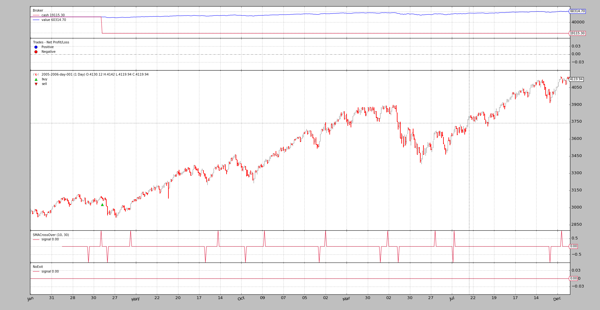

backtrader - Python backtesting¶
backtrader offers a complete backtesting/trading platform with this (not
fully comprehensive) list of features:
- Live Data Feed and Trading
- Datas with different timeframes can be mixed (days and weeks)
- Data Resampling
- Data Replaying (i.e: indicators/strategies see 5 bars in a weekly timeframe)
- Multiple Datas at the same Time
- Multiple Strategies at the same time
- Strategy optimization (including multicore support)
- Indicators (several) which can of course take datas and/or indicators as input
- TA-Lib support
- Plotting support for visual inspection
- Broker implementation with Market, Close, Limit, Stop, StopLimit orders
- Commission schemes supporting futures-like and stocks-like objects and customizable
- Performance analyzers including integration with
pyfolio- Event based (strategy/indicator ‘next’ will be called with all subordinate indicators calculated and data fetched)
- Vector (in the form on inner tight for loops) based for a one shot calculation This applies to indicators ... Strategies always are executed one step at a time
- Natural python language/operations for Indicator development and object comparison/operations (arithmetic, logical operators) As much as permitted by Pthon overriding capabilities (if, and, or cannot be overriden ... but they are provided as logical functions)
- Index 0 approach to access the currently produced (or to be produced) data
- Index -1 approach to access the last produced data (to remain Pythonic)
The Blog Entries¶
Rolling over Futures by mementum on Aug 31
Not every provider offers a continuous future for the instruments with which one can trade. Sometimes the data offered is that of the still valid expiration dates, i.e.: those still being traded

Credit Interest by mementum on Aug 22
In some situations, the cash amount in real brokers may be decreased because the operation on assets includes an interest rate. Examples:
Dickson Moving Average by mementum on Aug 17
In one of the regular visits to reddit Algotrading I found a post about a moving average which tries to mimic the Jurik Moving Average (aka JMA)

Stock Screening by mementum on Aug 15
Looking for some other things I came across a question on one of the StackOverlow family sites: Quantitative Finance aka Quant StackExchange. The question:
Strategy with Signals by mementum on Aug 01
Operating backtrader is also possible without having to write a Strategy. Although this is the preferred way, due to the object hierarchy which makes up the machinery, using Signals is also possible.


{kind=link}